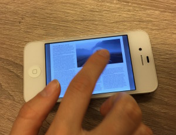

Intro
A fixed layout epub (FXL) can be described as a hybrid of pdf & ePub; combining the design control of a pdf with ePub’s searchability and the ability to be sold on Amazon. A main disadvantage is the lack of distribution opportunities (meaning not many ereaders will display them). The other disadvantage is the format is not responsive - like a .pdf it requires a lot of zooming to read on a mobile. You can see examples here.
The pros
Distribution: while you can't currently sell .pdfs, you can sell ePubs in iBookstore and on Amazon
Live text: all written content is searchable (for example, captions over photos do not have to be part of the image)
Control over page design
Full-bleed images and backgrounds
The cons
Labor intensive: InDD CS5.5 and earlier do not support exporting fixed layouts, so that means coding it by hand. Each page of a FXL has it's own .xhtml file, unlike reflowable ePubs which have one .xhtml per chapter
Limited distribution opportunities: very few readers support it at the moment. Apple is the main re-seller and this may result in needing to design 2 layouts (i.e. a tweaked version for Kobo)
The format doesn't scale for mobile reading.
The controversy
"I think they sound like a pointless step backward – a filetype with all the rigidity of PDF but with none of the cross-platform support." - Ben Hollingum
The quote above epitomises the Digital Reader article's list of problems with fixed layout books. Digital Reader proposes that eBook designers should move away from trying to keep the printed book format as a template for digital publishing. Craig Mod argues that the bond between reader and text can be strengthened or broken by the container, I see this as an affirmation that it needs serious consideration by designers and developers. He sums up his concern below:
Amazon and Apple are the paper‑makers, the typographers, the printers, the binders and the distributors: if they don’t make a style of paper you like, too bad. The boundaries of digital book design are beholden to their whim. - Craig Mod
Fixed layout books are often children's books, photography or cookbooks. To decide whether using fixed layout is right for a project, the publisher needs a clear idea of what their reader's devices are - it takes too much effort to create a layout that might work well in i-Books and not at all on other readers. This problem of limited implementation affects fixed layout ePubs as well as reflowable ePubs which often support only a very few styling options. The IDPF cautions eBook developers to be aware that reading systems typically restrict the ability to modify body margins indicates this limitation. Which essentially means designers are bound by the choices of distributors and e-reader makers.
The experiment(s)
To demonstrate, I created a fixed layout epub in InDD CC 2015. It didn't take much time to file > export fixed layout, and the pros are that it retains my weird text wrap, and the caption over the video. Since I wrote about the display in the cons section above, I thought I'd also show what it looks like - not just tell. When viewed in iBooks, changing the width of the viewport (screen) does not change the size of the text and it is only suitable for viewing on an ipad.

Fixed layout viewed on iPhone4s
Examples
Now that you've seen the rough-and ready test, here is an exciting example of a hand-coded ePub3, Kadath, by Walrus Studio, which includes columns and an interactive map. This book is really inspiring, but it's also custom-made - requiring a skilled developer and robust budget.
Additional Reading
For a really clear distinction between ePubs, PDFs and Apps see this excellent article from Indesignsecrets